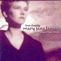

Celtic Lyrics Corner > Artists & Groups > Mary Jane Lamond > Òrain Ghàidhlig
|  |
Òrain Ghàidhlig
(2000) |
| Tracks : |
1.
Dh'fhalbh Mo Nighean Chruinn, Donn
2. An Cluinn Thu Leannain? 3. A Mhnathan A' Ghlinne Seo 4. Illean Aigh 5. Cead Deireannach Nam Beann 6. A Fhleasgaich Uasail 7. Puirt Eòs Peadair (Joe Peter's Tunes) 8. Ho Ró Mo Chuid Chuideachd Thu 9. Gun Chrodh Gun Aighean 10. Oran A' Phiognaig 11. Am Bràighe 12. Nighean Dubh, Nighean Donn |